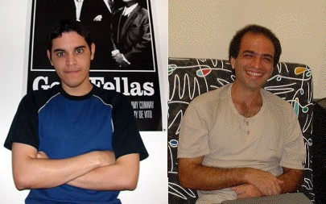

Diego's Version of the Dashti Verifier

GDV
- Verification of derivation correctness (and hence soundness)
- Based on semantic verification
- Does structural verification for various situations
- Mainly applied to CNF refutations
- Techniques are more general
Outline of Talk
- Semantic verification of ...
- Logical consequences
- Leaf formulae
- Splitting inferences
- Structural verification of ...
- Derivations in general
- SPASS style splitting steps
- Implementation and testing
- Future work